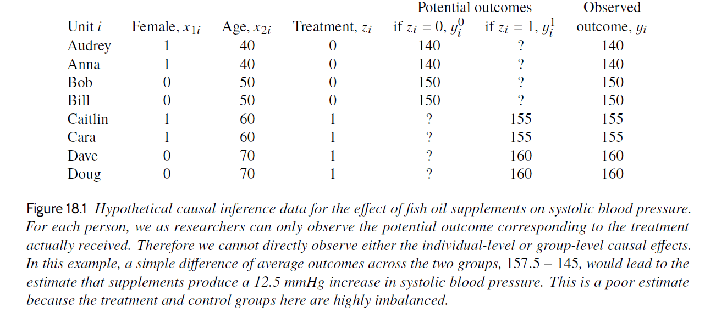
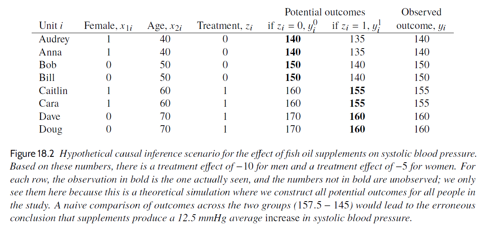
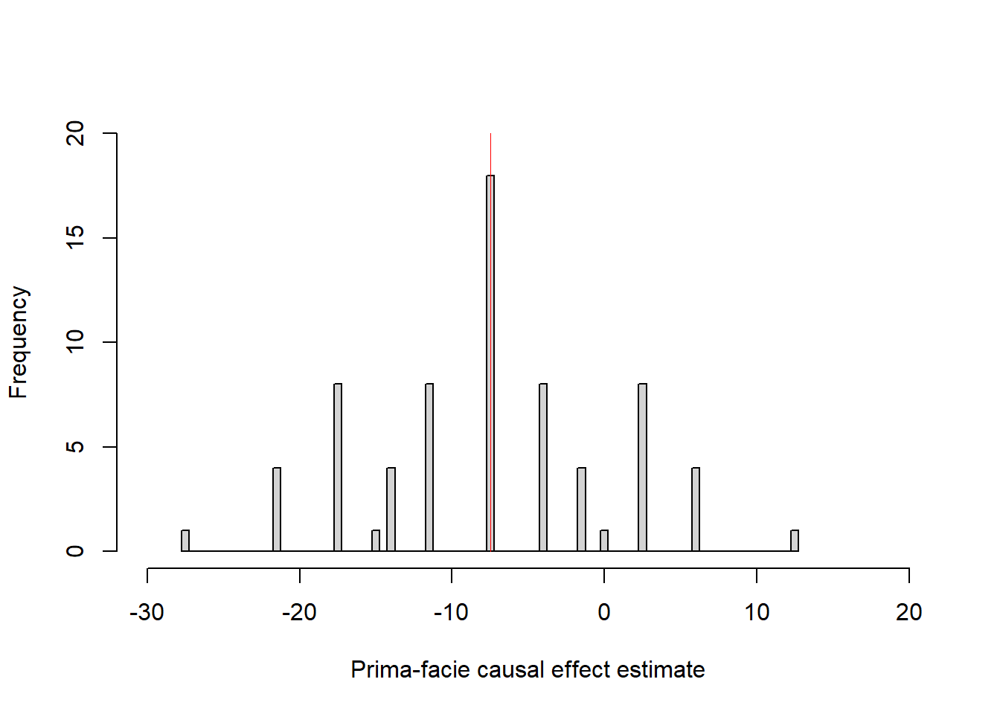
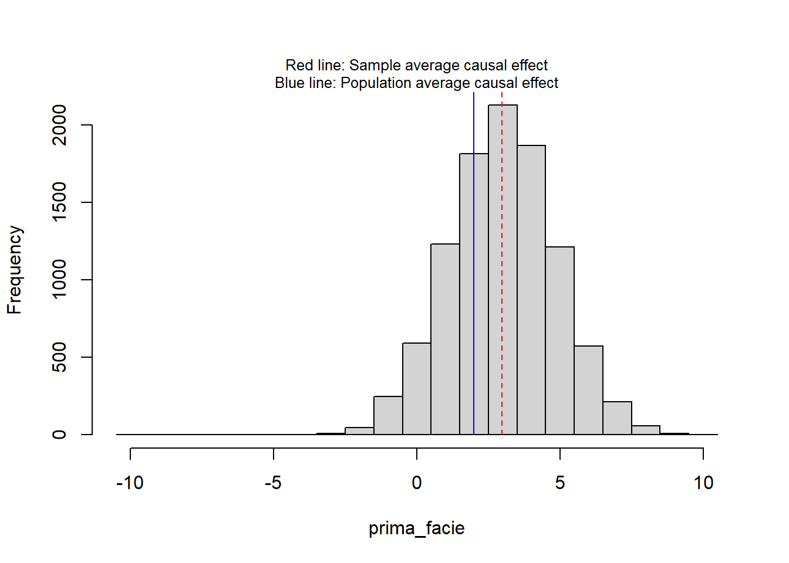

Code
library(dagitty) # R implementation of http://www.dagitty.netWarning: package 'dagitty' was built under R version 4.4.3Load R-libraries
library(dagitty) # R implementation of http://www.dagitty.netWarning: package 'dagitty' was built under R version 4.4.3Theoretical articles to read:
Other sources:
Remember that the single-unit causal effect \(\tau_i\) for an individual \(i\) involve the contrast between two potential outcomes, for example, their difference:
\(\tau_i = y_i^1 - y_i^0\), where
\(y_i^1\) is individual \(i\)’s outcome had he or she been in the treatment group and \(y_i^0\) is \(i\)’s outcome had he or she been in the control group (cf. Gelman et al. (2021), p.343).
The Fundamental Problem of Causality (Holland (1986)) implies that \(\tau_i\) always is unobserved, because we can never test a single individual twice at the same time. We may however estimate \(\tau_i\) if repeated measures is an option. But in many situations, repeated measures are not practically or ethically possible or it is not scientifically meaningful to repeat measurements due to carry-over effects. In such situations, we cannot estimate single-unit causal effects (they are “unidentified”), and have to settle with estimates of average causal effects. In experimental research this is done by comparing outcomes of groups in between-subject experiments.
The way individuals are assigned to experimental groups in between-participants experiments is crucial for the causal interpretation of between-group differences. If the participants are free to chose experimental group or if we don’t know how they were assigned to treatments (both often called “self-selection”), then the difference between group means is probably a biased estimate of the average causal effect. The observed group difference is sometimes called the prima-facie causal effect estimate.

In the table above \(z = 1\) refer to treatment group (fish oil supplements) and \(z = 0\) refer to control group (no fish oil supplements). If interpreted causally, \(\tau_{pf} = 12.5\) suggest that fish oil supplements on average increased systolic blood pressure with 12.5 units. This interpretation rests on the assumption that \(\tau_{pf}\) is an unbiased estimate of what we really want to know, namely the average single-unit causal effect, SATE. \(\tau_{pf}\) would be an unbiased estimate of SATE if it would be the same as SATE for very large sample sizes, or on average if the study was conducted over and over again.
If participants are self-selected to groups, then the prima-facie causal effect estimate may not equal the true average causal effect in the sample even for large N or repeated studies, because of systematic errors (bias) due to group differences at baseline, or group differences in treatment effects, or both.

In this table we see the unobserved potential outcomes (also known as the counterfactual outcomes). The true average causal effect was -7.5 units, that is, the treatment would on average decrease the systolic blood pressure, not increase it as suggested by the prima-facie estimate. Maybe the participants were free to select group, and the older, being more concerned with their health, chose fish oil supplements whereas the younger did not. If so, age may be a confounder causing both treatment and outcome.
The randomized experiment is generally agreed to be the “Gold Standard” for estimating average causal effects. A randomized experiment, in medicine often called randomized clinical trial (RCT), is a between-subject experiment in which participants are randomly assigned to experimental conditions, for instance to a control condition and a treatment condition. The main idea is that the contrast between the average outcome of the treatment group and the average outcome of control group is an unbiased estimate of the (unobservable) average causal effect of the treatment.
Random assignment means that study participants are assigned to different treatment conditions using a random process, for example, using a random number generator. Each participant has a non-zero probability to be assigned to all conditions, typically, but not always, with the same probability to each condition.
There are various ways to do this, below examples for an experiment with two groups (control and treatment groups):
z = sample(c(0, 1), size = 1), to decided whether he or she should be assigned to the the control (z = 0) or treatment group (z = 1). This may lead to different numbers of participants in the two groups.z = sample(c(0, 0, 0, 0, 1, 1, 1, 1), size = 8, replace = FALSE) will yield a random order of treatment conditions, and then you assign your first participant to the first treatment, your second to the second, etc. (there are of course equivalent alternatives, such as randomizing your list of participants, and assign the upper half to treatment z = 0 and the lower half to treatment z = 1.)In general:
Match or block as far as possible on measured variables that you consider causally relevant, then randomize.
This will reduce randomization errors (discussed further below), and thereby increase the precision of estimates.
For small sample sizes, randomization may not make group assignment independent of potential outcomes, and the groups they may still differ in expected outcomes at baseline or in the way they react to treatment. This is called a randomization error. Here is an illustration for potential outcomes of eight participants (from Gelman et al. (2021), Table 18.2):
# Gelman background and potential uutcomes, Table 18.2
id <- c("Audry", "Anna", "Bob", "Bill", "Caitlin", "Cara", "Dave", "Doug")
female <- c(1, 1, 0, 0, 1, 1, 0, 0)
age <- c(40, 40, 50, 50, 60, 60, 70, 70)
y0 <- c(140, 140, 150, 150, 160, 160, 170, 170)
y1 <- c(135, 135, 140, 140, 155, 155, 160, 160)
sate <- mean(y1) - mean(y0)
d <- data.frame(id = id, female = female, age = age, y0 = y0, y1 = y1)
# Print data frame, using knitr::kable()
knitr::kable(d, align = "c",
caption = "Potential outcomes eight participants")| id | female | age | y0 | y1 |
|---|---|---|---|---|
| Audry | 1 | 40 | 140 | 135 |
| Anna | 1 | 40 | 140 | 135 |
| Bob | 0 | 50 | 150 | 140 |
| Bill | 0 | 50 | 150 | 140 |
| Caitlin | 1 | 60 | 160 | 155 |
| Cara | 1 | 60 | 160 | 155 |
| Dave | 0 | 70 | 170 | 160 |
| Doug | 0 | 70 | 170 | 160 |
With 8 participants, there are 70 ways in which half can be assigned to the treatment group and the rest to the control condition. Figure below show prima-facie estimates for all 70 splits.
# All possible assignments of half to treatment group, rest to control group
gg <- combn(8, 4)
all_pf <- numeric(choose(8, 4)) # Empty vector to be filled
idn <- 1:8 # ID as 1 to 8
for (j in 1:choose(8, 4)){
treat <- gg[, j] # Treatment group
control <- idn[!is.element(idn, gg[, j])] # Remaining to control group
pf <- mean(y1[treat]) - mean(y0[control]) # Calculate PF
all_pf[j] <- pf
}
hh <- hist(all_pf, breaks = seq(-27.75, 12.75, by = 0.5),
xlim = c(-30, 20), ylim = c(0, 20),
main = "", xlab = "Prima-facie causal effect estimate")
lines(c(sate, sate), c(0, 20), col = "red", lwd = 0.4)
The red line show the average causal effect in this sample = -7.5 units, prima-facie estimates range from -27.5 to +12.5: Deviations from the average causal effect are randomization errors that only are due to how the participants happened to be assigned to groups. The particular assignments illustrated in Gelman et al’s Table 18.3 and 18.4 yield prima-facie estimates of -7.5 (= SATE) and -17.5 units, respectively.
Here a simulation with a more realistic scenario of 30 + 30 participants, with an average causal effect in the population of 2 units (0.2 sd units) and average causal effect in the sample (n = 30 + 30) of about 3 units.
# Simulate potential outcomes for one sample of n participants
set.seed(999)
n <- 60
pate <- 2 # Population average causal effect
y0 <- rnorm(n, mean = 50, sd = 10)
y1 <- rnorm(n, mean = 50 + pate, sd = 10)
sate <- mean(y1) - mean(y0) # Sample average causal effect
# Function that randomly assigns participants, and out-put the
# prima-facie causal effect estimate
randexp <- function() {
n <- length(y0)
z <- sample(c(rep(0, n/2), rep(1, n/2)), size = n, replace = FALSE)
y <- (1 - z)*y0 + z*y1 # Observed value
pf <- mean(y[z == 1]) -mean(y[z == 0])
pf
}
# Repeat randomization many times
prima_facie <- replicate(1e4, randexp())
# Display result
hist(prima_facie, breaks = seq(from = -10.5, to = 10.5, by = 1), main = "")
mtext(side = 3,
text = "Red line: Sample average causal effect\nBlue line: Population average causal effect",
cex = 0.8)
lines(c(pate, pate), c(0, 5e3), col = "blue", lty = 1 )
lines(c(sate, sate), c(0, 5e3), col = "red", lty = 2 )
print(round(c(sate = sate, pate = pate), 3)) sate pate
2.974 2.000 The practice problems are labeled Easy (E), Medium (M), and Hard (H), (as in McElreath (2020)).
9E1. Random selection of study participants from a population increases the external validity of a study, whereas random assignment of participants to experimental conditions increases its internal validity. Explain.
9E2. Why may it be beneficial to first match or block on measured variables before randomly assign to treatment conditions?
9E3. The table below similar to those in chapter 18 of Gelman et al. (2021), with
id <- sample(LETTERS[1:10], size = 10, replace = FALSE) # Participant number
Cpot <- c(10, 11, 11, 12, 9, 12, 12, 13, 13, 14) # Potential outcome treatment
Tpot <- c(10, 10, 9, 12, 8, 13, 13, 14, 13, 15) # Potential outcome control
group <- c(0, 0, 0, 0, 0, 1, 1, 1, 1, 1) # 1 = treatment, 0 = control group
Y <- ifelse(group == 1, Tpot, Cpot) # Observed outcome
single_unit <- Tpot - Cpot # Single unit causal effects
# Collect data in data frame
table_data <- data.frame(Unit = id, "y0" = Cpot, "y1" = Tpot,
Group = group,
Observed = Y)
# Print data frame, using knitr::kable()
knitr::kable(table_data, align = "l",
caption = "Hypothetical causal inference data from randomized experiment")| Unit | y0 | y1 | Group | Observed |
|---|---|---|---|---|
| B | 10 | 10 | 0 | 10 |
| J | 11 | 10 | 0 | 11 |
| I | 11 | 9 | 0 | 11 |
| A | 12 | 12 | 0 | 12 |
| H | 9 | 8 | 0 | 9 |
| E | 12 | 13 | 1 | 13 |
| C | 12 | 13 | 1 | 13 |
| F | 13 | 14 | 1 | 14 |
| G | 13 | 13 | 1 | 13 |
| D | 14 | 15 | 1 | 15 |
9E4. Below is another table similar to those in Chapter 18 of Gelman et al. (2021).
Calculate:
unit <- c("Audrey", "Anna", "Bob", "Bill", "Caitlin", "Cara", "Dave", "Doug")
female <- c(1, 1, 0, 0, 1, 1, 0, 0)
age <- c(40, 40, 50, 50, 60, 60, 70, 70)
treat <- c(1, 1, 1, 0, 0, 0, 0 , 1)
y0 <- c(125, 125, 130, 130, 150, 150, 160, 160)
y1 <- c(125, 125, 120, 120, 150, 150, 150, 150)
# Collect data in data frame
table_data <- data.frame(Unit = unit, Female = female, Age = age, Treatment = treat,
y0 = y0, y1 = y1)
# Print data frame, using knitr::kable()
knitr::kable(table_data, align = "l",
caption = "Hypothetical causal inference data for the effect of a fish oil supplements on systolic blood pressure.")| Unit | Female | Age | Treatment | y0 | y1 |
|---|---|---|---|---|---|
| Audrey | 1 | 40 | 1 | 125 | 125 |
| Anna | 1 | 40 | 1 | 125 | 125 |
| Bob | 0 | 50 | 1 | 130 | 120 |
| Bill | 0 | 50 | 0 | 130 | 120 |
| Caitlin | 1 | 60 | 0 | 150 | 150 |
| Cara | 1 | 60 | 0 | 150 | 150 |
| Dave | 0 | 70 | 0 | 160 | 150 |
| Doug | 0 | 70 | 1 | 160 | 150 |
9E5. The assignment to treatments in the table of 9E3 was random. Make a new random assignment where you first match the participants on sex and age and then randomly assign them to treatments (matched pair experiment).
9M1. Gelman et al. (2021) define the sample average treatment effect (SATE) and the population average treatment effect (PATE). These are typically estimated by the prima facie treatment effect, i.e., the contrast between the average of the treatment group and the average of the control group.
9M2. What is a randomization distribution? Refer to SATE and prima-facie causal-effect estimates in your explanation.
9M3. In education research, random assignment sometimes refer to schools or classes rather than pupils, and the unit of analyzes is schools (or classes). There might be different arguments for this, list as many as you can think of.
9H1.
(a) The the table in 9E3 show one random assignment of participants (column Group). How many different such randomization could you do with with the constraint of equal group sizes? (b) Do them all, and illustrate the corresponding prima-facie effect sizes in a histogram.
9H2. Think of an experiment with 300 men randomly assigned to one of two groups. You have background information on age (continuous from 18 to 60 years), which is believed to influence the outcome variable (continuous variable).
Compare these two design strategies:
9H3. Think of a scenario where the first design in 9H2 may lead to a biased estimate of the causal effect. Explain in terms of the potential outcome model.
sessionInfo()R version 4.4.2 (2024-10-31 ucrt)
Platform: x86_64-w64-mingw32/x64
Running under: Windows 11 x64 (build 26100)
Matrix products: default
locale:
[1] LC_COLLATE=Swedish_Sweden.utf8 LC_CTYPE=Swedish_Sweden.utf8
[3] LC_MONETARY=Swedish_Sweden.utf8 LC_NUMERIC=C
[5] LC_TIME=Swedish_Sweden.utf8
time zone: Europe/Stockholm
tzcode source: internal
attached base packages:
[1] stats graphics grDevices utils datasets methods base
other attached packages:
[1] dagitty_0.3-4
loaded via a namespace (and not attached):
[1] digest_0.6.37 fastmap_1.2.0 xfun_0.52 knitr_1.50
[5] htmltools_0.5.8.1 rmarkdown_2.29 cli_3.6.5 compiler_4.4.2
[9] boot_1.3-31 rstudioapi_0.17.1 tools_4.4.2 curl_6.4.0
[13] evaluate_1.0.3 Rcpp_1.0.14 yaml_2.3.10 rlang_1.1.6
[17] jsonlite_2.0.0 V8_6.0.4 htmlwidgets_1.6.4 MASS_7.3-61